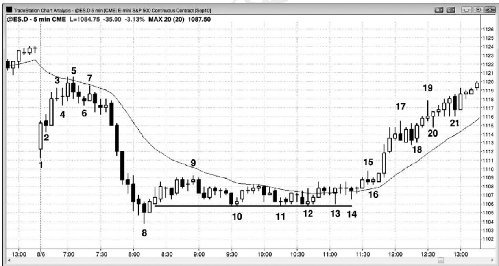
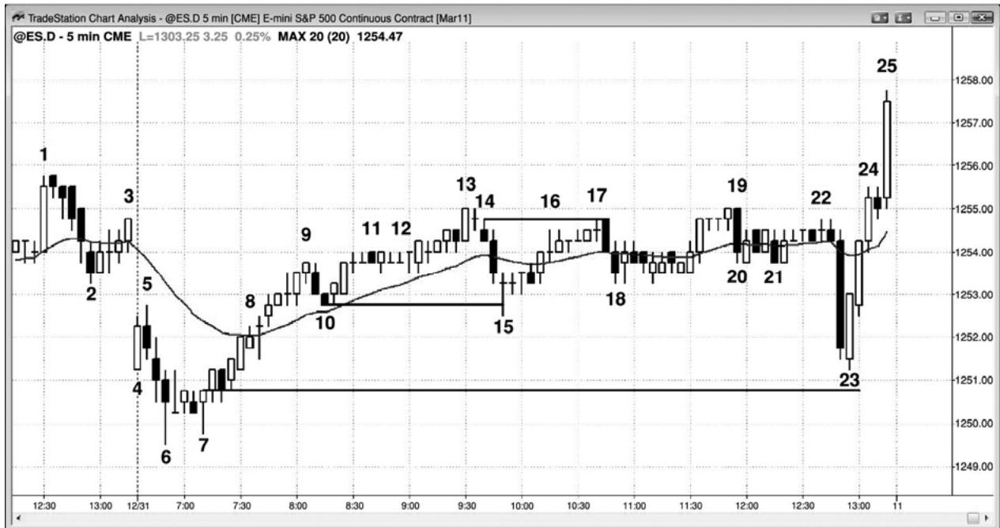
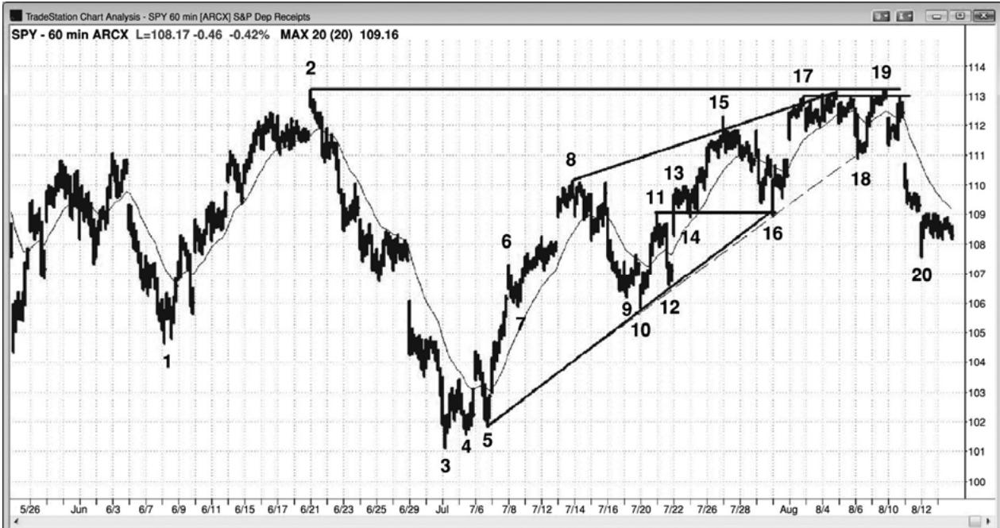
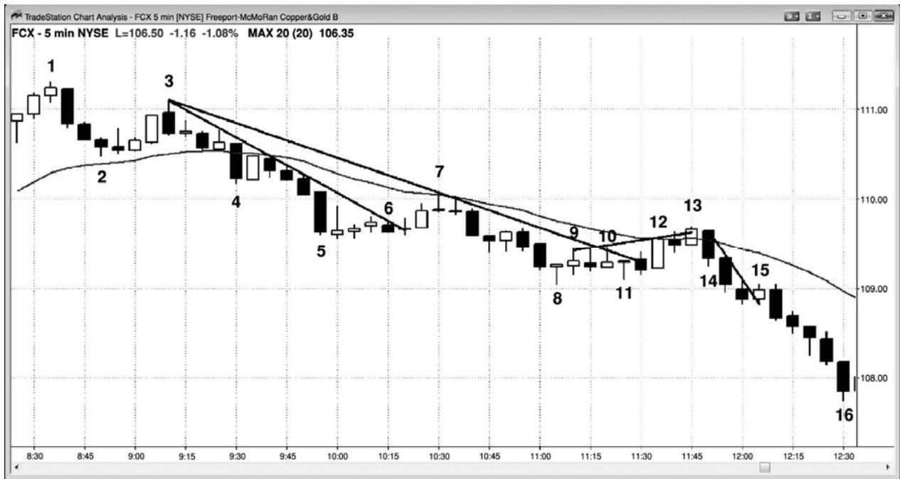
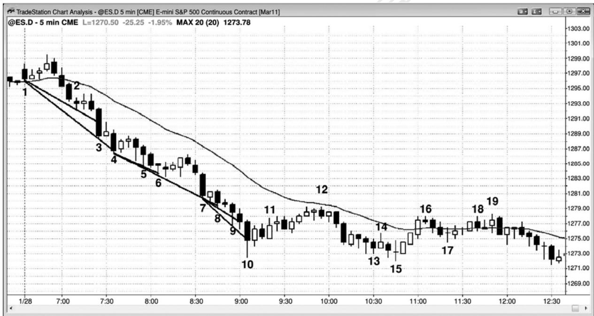

第28章 使用限价单入场¶
第 28 章 使用限价单入场
经验丰富的交易者们将会根据市场所处的环境而使用止损单或限价单入场。当市场处于强趋势中时，使用止损单入场是一种合理的方法。当市场更像是处于通道中时，他们将更倾向于使用限价单入场。举例说明，如果有一个强多头尖峰，那么交易者们将会在棒线上方和棒线顶部附近以市价用止损单入场。一旦市场进入通道期，虽然仍旧处于多头趋势中，但是趋势现在变弱，可能在任意时间结束，向下测试通道底部。初期，交易者们仍然会使用止损单在高点 1 和高点 2 买进信号入场。当通道行进一段时间（或许是 10 棒或更多棒）后，很多老手们将转换到使用限价单在前一棒低点及其下方使用限价单入场，而不是使用止损单在前一棒的高点上方入场。一旦通道行进了较长时间（或许是 20 棒），靠近阻力区，那么交易者们将停止买进，而是开始在前一棒的高点及其上方使用限价单卖出。他们将卖出多头头寸以获利，有些人将逐步入场空头头寸。一旦出现空头突破，上述过程便开始反转。如果空头趋势很强，那么他们将使用止损单在棒线下方卖出，但是，如果空前腿形疲弱，那么老手们将不会使用止损单在低点附近做空。相反地，他们更喜欢使用止损单在回撤做空，比如在均线附近的低点1或低点2架构下方，并且使用限价单在前一棒的高点及其上方做空。
在交易者达到稳定获利的水平之前，他应该只使用止损单入场，因为那样当他入场时，市场正在向他的交易方向运动，这增加了交易获利的几率。限价单入场可以获得同样高的成功率，但是研判架构的强弱是比较难的，这需要经验。同时，如果交易立即向你的方向运动，那么在心理上要比向相反方向运动更容易接受，而使用限价单入场时，市场通常是先向反方向运动的。使用限价单意味着你正在打赌市场即将反转方向。你可能是正确的，但为时尚早。所以，很多交易者在使用限价单入场时只交易较小的规模。他们准备在市场继续向不利方向运动时加仓，他们仍然相信市场不久将会反转。
以下情况下，使用限价单入场可能非常有用（应用示例见三本书中相关章节）：
如果你因几秒之差而未能在初始入场设定止损入场单，而且正努力在初始价位入场，那么就在初始价位或再差1个跳动处设定一张限价单。
如果前一棒是强多头尖峰中的一条强多头趋势棒，就在它的收盘价设定限价单买进。
如果前一棒是强空头尖峰中的一条强空头趋势棒，就在它的收盘价设定限价单卖出。
强多头尖峰中，在一棒收盘前的小幅回撤买进，比如在一棒当前高点下方两个跳动处设定一张限价单买进。
强空头尖峰中，在一棒收盘前的小幅回撤买进，比如在一棒当前低点上方两个跳动处设定一张限价单卖出。
当出现一条可能形成微型缺口的多头突破棒时，就在突破棒之前的那一棒的高点上方买进，那就是突破点。
当出现一条可能形成微型缺口的空头突破棒时，就在突破棒之前的那一棒的低点下方卖出，那就是突破点。
在强多头尖峰中，使用限价单在前一棒的低点或其下方买进。
在强空头尖峰中，使用限价单在前一棒的高点或其上方卖出。
强多头趋势中，在ii形态的底部上方1个跳动处使用限价单买进，以两个跳动的风险博取 4 个跳动或更多的利润，因为这大约拥有 60%的胜率。
强空头趋势中，在 ii 形态的顶部下方 1 个跳动处使用限价单卖出，以两个跳动的风险博取4个跳动或更多的利润，因为这大约拥有60%的胜率。
当一条不是特别大的多头趋势棒令市场翻转为总在场内多头时，使用限价单在它前一棒的高点上方 1 个跳动处买进，预期形成测量缺口（如果那一棒没有跌破多头突破棒前一棒的高点，那么就是一种突破强劲的征兆）。
当一条不是特别大的空头趋势棒令市场翻转为总在场内空头时，使用限价单在它前一棒的低点下方 1 个跳动处卖出，预期形成测量缺口（如果那一棒没有向上超越空头突破棒前一棒的低点，那么就是一种突破强劲的征兆）。
当开盘区间正在形成时，如果出现两条连续的多头趋势棒，它们都拥有很强的实体，那么就在前一棒的低点买进，预期多头尖峰的低点至少在一波刮头皮上涨之后才会被跌破。
P258
当开盘区间正在形成时，如果出现两条连续的空头趋势棒，它们都拥有很强的实体，那么就在前一棒的高点卖出，预期空头尖峰的高点至少在一波刮头皮下跌之后才会被跌破。
在交易区间的底部以市价或限价单在空头尖峰买进。
在交易区间的顶部以市价或限价单在多头尖峰卖出。
当多头市场中出现一个空头尖峰时，空头需要下一棒是一条空头棒，以确认总在场内交易翻转向下，在坚持到底棒形成前，在尖峰中的最后一条空头趋势棒的收盘买进，在空头趋势棒的低点及其下方买进，如果它没有一个空头实体，那么就在下一棒的收盘买进（以及使用止损单在它的高点上方买进）。市场更可能形成回撤，而不是空头尖峰和通道。
当空头市场中出现一个多头尖峰时，多头需要下一棒是一条空头棒，以确认总在场内交易翻转向上，在坚持到底棒形成前，在尖峰中的最后一条多头趋势棒的收盘卖出，在多头趋势棒的高点及其上方卖出，如果它没有一个多头实体，那么就在下一棒的收盘买进（以及使用止损单在它的低点下方卖出）。市场更可能形成回撤，而不是多头尖峰和通道。
当出现一条大型空头趋势棒时，如果它很可能是空头趋势终点的一个卖出高潮，或者是多头趋势中的一波回撤，那么就在那一棒的收盘价、在它的低点下方、以及在下一棒的收盘价买进（并且使用止损单在它的高点上方买进）。
当出现一条大型多头趋势棒时，如果它很可能是多头趋势终点的一个买进高潮，或者是空头趋势中的一波回撤，那么就在那一棒的收盘价、在它的高点上方、以及在下一棒的收盘价卖出（并且使用止损单在它的低点下方卖出）。
当单棒多头尖峰之后的多头趋势中形成回撤时，使用限价单在多头尖峰底部上方一两个跳动处买进，预期突破回撤，而不是突破失败。
当单棒空头尖峰之后的空头趋势中形成回撤时，使用限价单在空头尖峰顶部下方一两个跳动处买进，预期突破回撤，而不是突破失败。
当多头尖峰之后很可能形成第二条上涨腿时，使用限价单在原始信号棒高点上方一两个跳动处买进，即便测试在几十棒之后才到来。
当空头尖峰之后很可能形成第二条下跌腿时，使用限价单在原始信号棒低点下方一两个跳动处卖出，即便测试在几十棒之后才到来。
在多头通道中前一棒的低点下方买进，特别是当通道仍然处于早期阶段时。
在空头通道中前一棒的高点上方卖出，特别是当通道仍然处于早期阶段时。
在空头通道的晚期，卖压已经建立后，在前一棒低点下方和最近的波段低点下方买进。
在多头通道的晚期，买压已经建立后，在前一棒高点上方和最近的波段高点上方卖出。
在多头微型通道中的前一棒的低点下方买进，预期通道的第一次向下突破失败。
在空头微型通道中的前一棒的高点上方卖出，预期通道的第一次向上突破失败。
当出现尖峰和通道多头趋势以及向通道底部的低动能回撤时，在对通道底部的测试买进。
当出现尖峰和通道空头趋势以及向通道顶部的低动能回撤时，在对通道顶部的测试卖出。
在强多头波段的起点，至少几条强多头趋势棒之后的空头收盘买进。
在强空头波段的起点，至少几条强空头趋势棒之后的多头收盘卖出。
在区间底部的前一波段低点或其下方买进。
在区间顶部的前一波段高点或其上方卖出。
使用限价单在多头岩架（一种小型交易区间，底部由两条或多条低点位于同一价位的棒线构成）的底部上方一两个跳动处买进。
使用限价单在空头岩架（一种小型交易区间，顶部由两条或多条高点位于同一价位的棒线构成）的顶部下方一两个跳动处卖出。
在交易区间的底部或者在强势向上反转之后的新多头趋势中，使用限价单在低点 1或2弱势信号棒或其下方买进。
在交易区间的顶部或者在强势向下反转之后的新空头趋势中，使用限价单在高点 1或2弱势信号棒或其上方做空。
在强多头趋势中，做反向空头刮头皮，因为大多数会失败。当出现一轮强多头趋势，然后一个空头刮头皮架构时，使用限价单在空头刮头皮者们准备获利了结的位置上方两三个跳动处买进。举例说明，如果电子迷你在强多头趋势中形成一个做空架构，那么就准备使用限价单在那条空头信号棒下方约 4 个跳动处买进，风险大约为 3 个跳动，预期下跌不会达到 6 个跳动，空头需要市场下跌 6 个跳动才能赚取 1 点的刮头皮利润。
在强空头趋势中，做反向多头刮头皮，因为大多数反转尝试会失败。当出现一轮强空头趋势，然后一个多头刮头皮架构时，使用限价单在多头刮头皮者们准备获利了结的位置下方两三个跳动处做空。
P259
在非常强的多头趋势中，如果市场仍未跌破均线超过几个跳动，那么就在收盘低于均线一两个跳动的第一条小型空头趋势棒的收盘买进。
在非常强的空头趋势中，如果市场仍未向上刺穿均线超过几个跳动，那么就在收盘高于均线一两个跳动的第一条小型多头趋势棒的收盘卖出。
在均线处平静的多头旗形中，使用限价单在前一棒或其下方买进。
在均线处平静的空头旗形中，使用限价单在前一棒或其上方做空。
在均线处平静的多头旗形中的空头收盘买进。
在均线处平静的空头旗形中的多头收盘卖出。
在强多头趋势中的均线回撤买进，比如 20 缺口棒买进架构。
在强空头趋势中的均线回撤卖出，比如 20 缺口棒卖出架构。
在向陡峭的上升均线的回撤买进，然后在均线下方不断加仓。
在向陡峭的下降均线的回撤卖出，然后在均线上方不断加仓。
在向上突破多头旗形的一条多头棒下方买进，预期突破回撤。
在向下突破空头旗形的一条空头棒上方卖出，预期突破回撤。
当试图在多头趋势中做波段交易时，在突破测试时买进或加仓，突破测试是尝试触发早期多头入场的盈亏平衡止损。
当试图在空头趋势中做波段交易时，在突破测试时卖出或卖出更多，突破测试是尝试触发早期空头入场的盈亏平衡止损。
当出现一波向可能的双重底多头旗形回撤时，使用限价单在前一波段低点附近买进。
当出现一波向可能的双重顶空头旗形回撤时，使用限价单在前一波段高点附近卖出。
当你认为自己的预测非常正确时，就对交易逐步加仓。
如果市场处于台阶形态中，使用限价单在向前一台阶的回撤入场。举例说明，如果电子迷你的平均日区间约为12点，而且今天市场处于一个空头台阶形态中，那么就考虑在前一波段低点下方 4 点处设定一张买进限价单，预期市场向上测试那个波段低点。
在趋势型交易区间日，在极点处设定限价单，预期市场测试最近交易区间的另一侧。举例说明，在多头趋势型交易区间日中，当卖压正在建立时，考虑在测量运动目标（根据下侧交易区间的高度）下方 1 个跳动左右使用限价单做空，预期市场会测试上涨区间的底部，或者测试进入下侧区间。
在交易区间日区间顶部附近的多头尖峰中，在空头收盘卖出，尤其是当空头收盘位于前一棒区间的上半部分，而且它是第二次尝试向下反转时。
在交易区间日区间底部附近的空头尖峰中，在多头收盘买进，尤其是当多头收盘位于前一棒区间的下半部分，而且它是第二次尝试向上反转时。
在多头趋势型交易区间日，在测量运动目标附近的大型多头趋势棒的收盘价卖出，在其高点上方卖出，特别是当那一棒相对较大，所以可能是买进高潮，而且前 5 到10棒存在一些卖压时。
在空头趋势型交易区间日，在测量运动目标附近的大型空头趋势棒的收盘价买进，在其低点下方买进，特别是当那一棒相对较大，所以可能是卖出高潮，而且前 5 到10 棒存在一些买压时。
在多头趋势型交易区间日，当区间大约为 10 点时，在下侧区间高点上方 4 到 6 点处使用限价单做空，预期形成突破测试。
在空头趋势型交易区间日，当区间大约为10点时，在上侧区间低点下方4到6点处使用限价单买进，预期形成突破测试。
在强空头通道中，当市场正在形成双棒向上反转时，就在第二棒向第一棒的高点上涨时做空，风险为几个跳动，预期市场不会向上超越第二棒，触发做多架构。
在强多头通道中，当市场正在形成双棒向下反转时，就在第二棒向第一棒的低点下跌时买进，风险为几个跳动，预期市场不会向下跌破第二棒，触发做空架构。
在多头趋势中，使用限价单在市场测试多头趋势线时买进（不过，通常在测试多头趋势线的多头反转棒上方买进会更好）。
在空头趋势中，使用限价单在市场测试空头趋势线时买进（不过，通常在测试空头趋势线的空头反转棒下方卖出会更好）。
在多头趋势或交易区间中，当市场测试向下倾斜的趋势通道线时，在下降楔形（楔形多头旗形）买进（不过通常在测试那条线的多头反转棒上方买进通常会更好）。
P260
在空头趋势或交易区间中，当市场测试向上倾斜的趋势通道线时，在上升楔形（楔形空头旗形）买进（不过通常在测试那条线的空头反转棒下方卖出通常会更好）。
当多头趋势中出现回撤时，那回撤便是小型空头趋势，在波段低点下方买进，预期向新低的突破失败，成为高点 2 或楔形多头旗形买进信号。
当空头趋势中出现回撤时，那回撤便是小型多头趋势，在波段高点上方卖出，预期向新高的突破失败，成为低点2或楔形空头旗形卖出信号。
多头趋势中，在当前高点之后市场回撤 60\~70%时买进，风险为跌至一个更低低点，并且在新的高点或其上方获利了结（回报大约是风险的两倍，胜率大约为 60%）。
空头趋势中，在当前低点之后市场回撤 60\~70%时卖出，风险为涨至一个更高高点，并且在新的低点或其下方获利了结（回报大约是风险的两倍，胜率大约为 60%）。
总之，当市场处于多头趋势中时，多头将预期空头的每一次尝试都会失败，所以准备在每个回撤买进。他们将在每条空头趋势棒的收盘价附近买进，即便那一棒很长，而且收盘于低点。他们将在市场跌至前一棒低点下方、前一波段低点下方、任意支撑位（比如趋势线）下方时买进。他们还会在市场每次尝试走高时买进，比如在多头趋势棒的高点附近，或者当市场上涨超越前一棒高点或阻力位时。在强空头趋势中，交易者们的做法恰好相反，他们会在棒线的上方和方卖出，会在阻力位和支撑位的上方和下方卖出。他们在棒线（以及各种类型的阻力位）上方卖出，包括大阳线上方，因为他们把每次的上涨运动都看作是对趋势的反转尝试，而大多数趋势反转尝试都会失败。他们在棒线（以及各种支撑位）下方卖出，因为他们把每次下跌运动都看作是空头趋势恢复的尝试，预期大多数下跌尝试都将成功。
市价单就是一种限价单，在使用市价单时，交易者急切于入场或出场，不关心一两个跳动的价差。很多希望在市价交易的交易者，只是在他们的价格阶梯上设定一张限价单，所以很多限价单交易者实际上是希望在市价入场或离场。举例说明，如果 QQQ 在$51.10，而且处于多头尖峰中，那么希望在市价做多的交易者们常常会在他们的出价上方的价格阶梯上击中一张买进限价单，比如在$51.14，并且在市价被执行。因此，对于喜欢使用市价单的交易者来说，我所写的关于限价单的大部分内容，也适用于市价单。
每次市场向上超越前一棒的高点或者向下突破前一棒的低点，都会有非常重要的事情发生。市场正在突破前一棒的区间，但是，知道大部分突破尝试失败是非常重要的。遗憾的是，初学者们常常被所有突破中的情绪所俘获，认为市场正要开始一波大的运动。他们不明白突破只是一种测试。市场正在寻找价值，突破只是多头和空头之间的一次争夺，通常不是大趋势的开始。在所有时间框架的每张图表上，市场每隔一两棒就要进行这种测试。使用止损单在每一棒高点上方买进、在每一棒低点下方做空的交易者，会选择每一个突破，而且会赔钱。为什么呢？因为止损入场是一种突破交易，而大部分突破失败。市场通常会回撤到交易区间内，比如前一棒的实体内，然后再决定下一步向哪里运动。虽然止损入场是初学者们最好的选择，但是他们必须要仔细选择。
比如说当前一棒只是上涨超越前一棒高点 1 个跳动。大部分私人交易者要么什么都不做，要么使用止损单在前一棒高点上方 1 个跳动买进，要么使用限价单在前一棒的高点卖出。如果突破成功，市场上涨的幅度足以令多头获利，那么他们就是做出了正确的决策。但是，如果向上超越前一棒的运动只是一个买进真空，那么市场很快会向下反转，空头将会获利。如果趋势是向下的，那么很多空头将会等待反弹卖出，比较好的架构是反弹超越任意关键价位，比如空头趋势线、前一波段高点，或者甚至只是前一棒的高点。如果有足够强的空头等待市场向上超越某个价位后才做空，那么这种买进真空（译注：应该是卖出真空吧？）很容易使市场向上超越前一棒高点一两个跳动。市场没有在那里找到大量的强势多头，而是找到了大量的强势空头，他们正等待市场略上涨一点，比如超越前一棒高点，然后才会做空。
反过来对于上升趋势中的多头也是正确的。他们希望在回撤买进，如果足够强的多头认为空头能够推动市场跌破当前棒线的低点，他们认为自己不久将能在更低价位买进，那么为什么还要在到达那一价位前买进呢？他们只是在一旁观望，设定限价单在前一棒低点买进，等待空头推动市场跌破当前棒线的低点。那种卖出真空吸引价格跌入他们的买进区，他们积极买进，被套的空头不久将不得不买回他们的空头头寸（为上涨添加了燃料），市场快速向上反转。
大部分时间里，在前一棒高点上方使用止损单买进，或在前一棒高点使用限价单做空的胜率都约是 50%，但常常是 60%或更多地偏向于止损单或限价单。随着经验的积累，交易者们能够捕捉到这些 60%的情形，在自己拥有优势的方向上下单。由于大部分突破尝试失败，所以成功的限价单入场一般更为可靠，但是它们却很难设定，因为你正在打赌一波运动将会失败，并在击中你的保护性止损前向你的方向反转。在交易者积极大量经验之前，等待市场向自己的方向反转，是非常紧张的。就像盲目地在每个止损信号入场是一种失败的策略一样，盲目地使用限价单在每个信号反向入场也是一种失败的策略。在任意一个交易日，可能有大约 10 个合理的止损入场架构，以及 20 个或更多合理的限价单架构，不过很多架构是新手们看不到的。因为有如此多可靠的限价单架构，所以对于交易者来说，能够评估它们是非常重要的。
P261
当你正试图用限价单入场时，你是在试图比当前价位更好的价位入场。举例说明，如果你正准备使用限价单买进，那么你的订单就位于当前价位的下方，需要价格下跌，你的订单才会被执行。一般而言，止损入场是一种较为安全的策略，因为当你入场时市场正在向你的方向运动，出现坚持到底运动的几率比较高。对于初学者来说，这是最好的策略。但是，在很多情况下，你可以使用限价单而不是止损单入场。实际上，如前所述，限价单架构的数量通常大约是止损入场架构的两倍，但是它们的风险较高，通常较难操作，因为至少在短期内它们是与市场方向相反的。举例说明，市场向上突破空头趋势线和强多头反转棒后的回撤中，如果你刚刚在一个二次入场架构买进，而且市场在接下来的一两棒内精确地测试入场棒的低点，那么就考虑设定限价买单在入场棒低点上方 1 个跳动处将头寸加倍，风险只两个跳动（至初始止损，略低于入场棒）。如果你尝试使用限价单在入场棒的低点买进，那么很可能不会被执行，因为市场通常必须穿越限价单价位，订单才会被执行。每个人都知道那个入场棒低点下方 1 个跳动处有很多保护性止损——聪明钱为什么不猎杀那些止损呢？那是因为，如果那些止损被击中，那么市场的特性就已经改变。非但不能成为一个很强的二次入场，图表现在已经拥有一个失败的二次入场，那是一个顺势架构，很可能引起另外两条下跌腿。如果聪明钱已经在底部吃货，那么他们不会希望看到市场再形成两条下跌腿，于是他们的做法刚好与你的相反：他们将继续累积多头头寸，以防底部被空头攻破。最后，卖家将会放弃并开始回补，当他们这样做时，市场将会上涨，远远超越刮头皮交易的利润。
限价单入场至少在短期内是逆势的，一般来说，可能产生不必要的紧张感，会对你当天后来的交易能力产生影响。仅仅强尖峰并不足以作为开始准备使用限价单在回撤入场的理由。举例说明，如果电子迷你中出现一个强多头尖峰，向交易区间顶部运动，或者是多头趋势终点出现一波可能的买进高潮，那么交易者们可能把它看作一种力量的征兆，可能在下跌 1 到4 点处对多头头寸设定限价单逐步加仓。然而，他们需要考虑到那个多头尖峰是一个耗尽型买进高潮的可能性。当存在疑虑时，交易者们不应在市场下跌时使用限价单买进，因为下跌可能持续至少 10 棒和两条腿，可能是向下反转的开始。仅仅强多头尖峰并不足以作为使用限价单在回撤买进的理由；交易者们需要考虑多头尖峰这个背景。空头尖峰的情形刚好相反。
另外，如果市场上涨了几个小时，但是现在已经下跌了一个小时，而且没有见底的迹象，你设定限价单在斐波那契60%折返位，在布林带、肯特纳通道（Keltner Channel）或其他任何类型的带处买进，那么当你入场做多的时候市场正在下跌，所以你的交易正与当前趋势相反，希望先前的趋势将会恢复。市场常常会在回撤 62%时反弹，但是频率和幅度并不足以与止损入场相比。如果市场在 62%折返位附近向上反转，那么就等待那一棒收盘，看它是否拥有一个看涨收盘。如果形成一个看涨收盘，那么就在它的高点上方 1 个跳动处下单买进。然后，当你入场时，市场将正向你的方向运动，多头将展示出自己的力量，一是看涨收盘，一是他们推动市场超越前一棒高点的能力。你仍然拥有对自己有利的 62%回撤。如果交易不错，那么现在更有可能成功。是的，等待止损入场，你可能错过几个跳动，但是你会避免很多亏损交易和不必要的紧张。
有那么几种情况，使用限价单入场的胜率会与很好的止损单入场的胜率相比。如果由于某种原因，你错过了一笔看起来很棒的止损交易，而且在几秒内你能够在止损价位或差一两个跳动的价位设定限价单入场，那么这可能非常有效。但是，仅在面对非常强的交易架构时才能使用这种方法，因为一般而言，一旦错过原始入场，你就不希望自己进入在很棒的价位入场的交易中。很棒的交易极少会回来帮助那些不太精明的交易者们摆脱困境。
在强多头趋势中，你不能准备在低点 1 或低点 2 做空，特别是当信号棒疲弱时。当出现一条暂停棒或弱空头棒时，很多交易者会在一旁等待，直到市场跌破那一棒后才会买进。这将产生一个微型的卖出真空。在那一棒的低点或其下方买进，常常是一笔不错的交易，预期高点 1 或高点 2 在几个跳动高处触发。其他交易者会在尖峰高点下方固定间隔处买进，比如下跌一两点处，这常常对应着那些低点 1 和低点 2 信号棒的低点。记住，在强多头趋势中，低点 1 和低点 2 信号并不存在，它们只是陷阱。大约 80%的情况下，强多头趋势的顶部会变成多头旗形。反过来在强空头趋势中也是正确的。在强空头趋势中，在高点 1 和高点 2 信号棒的高点或其上方做空，常常是很好的策略。
如果你正在选择一个反转入场，特别是在交易区间中，那么交易过程中常常会出现回撤，常常是在入场一两棒内。如果你对自己的价格行为阅读能力非常自信，那么你可以在那些回撤处反向入场。这些通常是你认为将会失败的低点或高点 1 或 2 架构。举例说明，如果交易区间日形成一个楔形底，而且你在向上反转买进，那么你可以预期楔形低点不会被跌破。你认为趋势现在是上涨，所以你希望在回撤买进。回撤可能小到只有一棒。由于可能形成两条上涨腿，所以第一条下跌腿的幅度应该不会很大。那个低点 1 做空架构应该失败，成为新多头腿中的一个回撤，因为随后 10 棒或更多棒的趋势已经向上反转。低点 1 做空架构可靠的唯一时间是在强空头趋势的尖峰期中，决不是在反转形态之后。那个低点 1 做空入场很可能不会跌破楔形低点，而是在两条腿向上调整中形成一个小幅更高低点。因此，你可以在那条空头信号棒低点或其下方 1 到 3 个跳动处使用限价单买进，预期形成一个小幅更高低点，而不是可获利的低点 1 做空架构。在电子迷你中，你的风险通常可以低至 4 个跳动。
P262
随着向上反转继续，你可能认为会形成一个低点 2 做空架构。但是，因为你认为趋势棒已经反转进入多头趋势，所以你也预期那个低点 2 失败，随后价格将会上涨。你仍然处于买进回撤状态，那可能包括一个小幅回撤，比如一个低点 2。这里，你可以再次设定限价单在低点 2 信号棒低点或其下方买进，在电子迷你中的风险大约是 4 个跳动。你正预期这个空头旗形的突破幅度不会超过几个跳动，相反地，市场会继续上涨进入多头通道。这是一种最终旗形，因为它是空头趋势的最终旗形。空头认为它是一个空头旗形，但是当他们不能让市场向下突破空头信号棒超过一两个跳动时，该旗形将会继续向右上侧伸展，直到交易者们认识到它已经变成一条多头通道。在某个点处，当足够的交易者认识到正在发生什么时，空头将会回补，通常会形成一个向上突破，然后是一波向上的测量运动。一旦空头认为市场已经到达交易区间的顶部，或者多头趋势正在向下反转的过程中，他们将寻找高点 1 和高点 2 信号棒，然后在那些棒线的高点或其上方设定限价单做空。他们正准备在向上反弹时做空，甚至是非常小的反弹，比如高点 1 或高点 2。多头将准备在交易区间底部的低点 1 和低点 2 入场买进。如果之前是一轮空头趋势，那么当多头感觉市场正处于向多头波段反转的过程中时，他们也会在低点1和低点2买进。
正如第三本书中关于趋势反转的一章所讨论的，大部分顶部是某种类型的双重顶，会演变为高点 1、高点 2 或三角形突破，那个高点 1、高点 2 或三角形就变成上涨中的最终多头旗形。当上涨腿和顶部的幅度较小时，双重顶就是一个微型双重顶。当交易者们正预期形成反转时，他们将在多头旗形的信号棒（译注：高点？）及其上方设定卖出限价单，预期多头旗形失败。底部通常来自于失败的低点 1、低点 2 或三角形突破，形成空头趋势中的最终旗形。当双重底仅由几棒构成时，它是一种微型双重底。如果交易者们预期旗形失败，引起向上反转，那么他们会设定限价单在卖出信号棒的低点及其下方买进。
再回到那个楔形底，如果它以一条大型多头反转棒结束，然后又形成一条尾线短小的强多头趋势棒，那么很可能形成两条腿上涨。如果下一棒是一条小型多头棒或一条十字星棒，那么无论在何种环境下，这都是一个疲弱的低点 1 做空架构，在可能的楔形底之后，它尤其不可能引出一个可获利的做空架构。最低限度，空头至少应该等待低点 2，但是如果趋势已经反转，那么低点 2 也很可能失败。聪明的多头看到那个疲弱的低点 1 架构，预期它不能为空头产生一笔刮头皮交易的利润；他们将设定限价单在那一棒低点或者下方几个跳动处买进，在电子迷你中的风险可能是 6 个跳动。在所有市场中，交易者们一直都这样做，限价单和保护性止损的位置取决于市场。举例说明，假设谷歌（GOOG）近期的平均日区间是$10；如果市场在 5 分钟图上的空头楔形之后向上反转，而且头几棒离开低点$3，那么交易者可能设定限价单在下方大约 50 美分处买进，或许比第一条腿的顶部低$1.50，或许比低点 1 信号棒低 50美分，甚至 1 美元，风险是另外的$1.50 或$2.00，或者是跌至楔形低点下方。
在某些带刺铁丝形态和小型交易区间中，如果棒线较长，大部分重叠，而且形态基本水平，那么使用限价单入场也可能是有效的。但是这比较冒险，而且需要快速做出决策，只有最杰出和最有经验的交易者才可尝试。
交易者们常规性地使用限价单和市价单在所有类型的通道做反向交易，在顶部做空，在底部又反转做多。如果一段交易区间拥有非常确定的支撑和阻力，而且支撑和阻力已经被测试过多次，那么它就是最安全的通道。由于虚假突破很常见，所以在上侧阻力线做空或者在下侧支撑线做多的交易者们，是在极点处进行反向操作，他们需要把自己的保护性止损设得离支撑或阻力线足够远，以便容许市场在反转方向，测试区间另一侧前形成失败的突破。在趋势通道中，交易者们也是这样操作。举例说明，如果有一条多头趋势通道，那么当市场触及或接近趋势通道线时，他们将以市价单或限价单做空，他们将在通道内最近的波段高点上方做空，并且在市场继续走高时逐步加仓。如果是在一个交易日的最后一两个小时，那么这不是一种好策略，因为你常常会把时间用光，不得不在亏损的情况下回补一个大型空头头寸。
在通道底部，当市场测试趋势线时，多头将以市价单或限价单买进，同时，他们会把保护性止损设在那条线的下方足够远处，以容许市场在那条线处形成小幅过冲。他们还会在前一棒低点或其下方使用限价单买进。由于他们是在顺势交易，所以他们更可能把头寸波段化，并且在随后的架构中加仓。在多头通道中，你不应寻找低点 1、2、3 或 4 架构，因为它们只是空头趋势或交易区间中的架构。如果你在多头趋势中看到一个低点 1、2、3 或 4 架构，那么由于它很可能失败并击中上方的保护性买进止损，所以做反向交易更为合理。在那一棒（译注：低点？）或其下方设定限价单买进，而不是准备在前一棒的低点下方做空。在你买进的价位，那些空头将正在做空，因为他们很可能亏损，所以你很可能盈利。
如果通道内存在较宽的波段，比如在趋势型通道或台阶形态中，甚至会存在更强的双向交易，于是在通道顶部和底部做反向交易，甚至更为可靠。如果交易者交易足够小的规模，以便市场在向与初始入场相反的方向进一步运动时能够逐步加仓，那么通道反向操作将更加可靠。举例说明，如果市场处于空头通道内，那么你可以在每个波段低点下方设定限价单买进，并且准备在小幅下跌后加仓，使用宽松的止损。如果市场在首次入场后到达你的利润目标，那么就获利了结。相反地，如果趋势继续，你的第二张限价单也被执行，那么你就可以在首次入场的价位退出两个头寸。于是，你首次入场的交易不赚不赔，二次入场的交易将会获利。对于逆势交易逐步加仓的交易者，有一条重要警告，那就是当第二波运动对你不利时，应该离场并反转至顺势方向。也就是说，如果你正在多头趋势中对空头交易逐步加仓，那么就在高点 2 离场，甚至反转做多，尤其是当高点 2 位于均线附近时。类似地，当在空头趋势中对多头交易逐步加仓时，如果市场形成一个低点 2，特别地，如果那个低点 2 位于均线附近，那么就在那个低点 2 触发时离场，甚至反转做空。
P263
在电子迷你中，刮头皮者通常需要超越信号棒 6 个跳动的运动，才能刮取 4 个跳动的利润。这是因为，入场止损单超越信号棒 1 个跳动，然后你需要市场再运动 4 个跳动以达到你的利润，而且只有当市场超越你的利润目标止损单 1 个跳动时，你的订单通常才会被执行。有时，市场没有穿越你的订单所在价位，你的订单就会被执行，但是当那种情况发生时，市场通常很强，很可能在你的订单执行后几分钟内超越那一价位。类似地，在 QQQ 中刮取 10 个跳动的利润，你通常需要12个跳动的运动。
当某个架构看起来疲弱时，最好不要选择，而且等待另一个机会。如果它很疲弱，那么它很可能失败，你应该承担不必要的风险。通常，疲弱的架构会形成二次入场，在那种情况下，它变为较强的架构。
交易者们也可使用限价单在向突破区域回撤时入场，前提是他们认为突破很强，而且他们认为那个测试将会成功。突破测试的目的是看交易者们是否会在之前入场的价位再次入场。举例说明，在空头波段中的一个最终旗形之后，如果 5 分钟电子迷你以一条强多头反转棒向上反转，而且反弹持续了几个小时，那么市场常常会向下测试那条多头信号棒的高点，相距在一两个跳动之内。交易者们曾经在那一棒上方积极买进，现在市场正回过头来向下测试那一价位。如果多头趋势很强，那么买家将会在同一价位返回，多头波段将会恢复。很多机构按照常规会在那一价位设定限价单和市价单，那为交易者们提供了一个极好的风险/回报比。他们不得不冒的风险可能只有 4 到 6 个跳动，他们可能有超过 50%的机会赚取 4 点或更多。具体的例子见讨论失败的突破、突破回撤和突破测试的第 5 章。
虽然大部分交易者应该使用止损单入场，但是当出现强趋势时，在任何时间入场都是安全的， 在交易股票时，使用限价单在均线处入场特别好，效果通常会超乎想像。这将带来更低的风险和更大的潜在回报，而且胜率基本不变。在多头趋势中，交易者们常常冒着跌破最近更高低点的风险，所以在回撤买进意味着他们的保护性止损更小。类似地，在空头趋势中，交易者们常常把他们的保护性止损设在最近的更低高点上方，并且在回撤做空。

图28.1所示的图表显示出几个使用限价单入场的很好示例。截止棒3的上涨运动很强，市场刚好在均线下方暂停，均线是一个磁力位。市场足够靠近均线，受到均线的磁性拉力。由于棒 3 是一个十字星，所以是强上涨运动之后的一个糟糕的做空信号，市场在再次上推测试均线前，很可能不会大幅下跌。激进的多头可能会在棒 3（低点）或其下方使用限价单买
进，预期测试均线，可能冒6个跳动的风险。
在棒 5 测试均线之后，市场很可能会形成横向至下跌的调整。精明的交易者们看到多头不能创造连续的强多头趋势棒。这提升了他们做空的积极性。棒 5 是测试均线底部的一条空头棒。由于它出现在第二波卖出高潮（由当天第一棒和第三棒构成，它们都是大型多头趋势棒）之后，随后很可能形成两条腿的横向至下跌调整。所以，在棒 6 高点或其上方 1 个跳动处使用限价单做空，是风险/回报比不错的交易。有些多头认为很可能出现高点2买进信号，于是他们在棒 5 低点及其下方设定限价单买进。但是，由于最近市场表现出双向特征，所以这是一种比较冒险的策略。有些交易者看到棒 5 处的空头收盘，预期均线处会形成低点 2 做空信号。棒5刚刚收盘之后，他们就以市价单或设在棒5收盘价处的限价单做空。
当市场从均线处向下暴跌时，交易者们在三条大型趋势棒的收盘做空，当空头棒正在形成时，他们在小幅回撤做空。举例说明，很多人会在最近低点下方 1、2 或 3 个跳动处使用限价单做空。
从棒 1 到棒 5 的开盘区间，大约为平均日区间的一半，所以，一旦市场跌破棒 1，有些交易者就会观察测量运动目标，预期市场会到达可能的当日低点。棒 8 低点是一波向下的测量运动的准确目标，基准为棒 1 高点至棒 5 高点。交易者们知道，此时当日开盘价刚好位于当日区间的中点，收盘之前，市场很可能会向上测试开盘价。这将在日线图上产生一条十字星棒，开盘价和收盘价都位于当日中点。如果市场能够上涨至当日高点，那么当天就成为一个多头反转日。有些多头愿意在测量运动目标上方 1 个跳动处使用限价单做多，然后持有头寸，预期市场测试开盘价。测试当日开盘价的成功率大约为 30\~40%。他们可能会使用几点的保护性止损，然后他们可能会等待，看发生什么。由于下跌正在失去动能，所以很可能有足够的获利了结者使市场在击中他们的保护性止损前反弹。如果市场跌破他们的入场价位，但是没有击中他们的止损，那么，如果他们感觉自己先前的预期不再准确，那么他们可能会在盈亏平衡点离场。一旦市场形成两条向上的反转棒，他们就可以把自己的保护性止损移至盈亏平衡点，然后他们就可以耐心等待，看反弹是否会形成，这里市场向上反弹。
截止棒 8 的空头尖峰包含 7 条连续的空头趋势棒。把它看作力量征兆的交易者们，可能会在上涨 1 到 4 点时设定限价单，对空头交易逐步加仓。然而，他们需要考虑到那个空头尖峰是一个耗尽型卖出高潮的可能性。当存在疑虑时，交易者们不应在市场正在上涨时使用限价单卖出，因为上涨可能持续至少 10 棒和两条腿，可能是向上反转的开始，特别是在当前环境下。仅仅强空头尖峰，并不足以作为使用限价单在反弹做空的理由。交易者们必须观察空头尖峰所处的环境。
低点处的紧凑交易区间，很好地说明了理解交易数学能够引出很棒的交易。那段区间非常紧凑，不能使用止损入场做刮头皮。当区间这样紧凑时，你不能在棒线上方买进或者在棒线下方做空，并且预期产生一致获利的刮头皮交易。但是，对于波段交易者来说，却存在一个很棒的机会。当天是一个趋势型交易区间日，如果市场向上突破那段紧凑的交易区间，那么就有 70%的可能会测试上侧区间的底部，即棒 1 低点。一旦双重底多头旗形被超越棒 11 的那波运动确立，那么多头将会捍卫那个低点。所以，在它上方 1 个跳动处使用限价单买进，风险为它下方一两个跳动，这是一笔风险/回报比很好的交易。你的限价单可能会在棒 12 被执行，棒 12 精确地重复测试了棒 10 和棒 11 双重底。你正在冒着大约 3 个跳动的风险去博取至棒 1 低点的利润，至少为 4 点，如果市场向上反转，测试上侧区间的高点，那么利润甚至为12点左右，这里市场便测试了上侧区间的高点。由于你正在一段紧凑交易区间的底部买进，所以市场有 60%的可能性去测试区间顶部。但是，你需要一个成功的向上突破，而紧凑交易区间向任一方向突破的概率都是 50－50。所以，当你入场买进时，你有 50%的几率赚取 4 点或更多，而所冒的风险却不到 1 点。这是一笔风险/回报比很棒的交易，但是只有理解交易数学的交易者才能够以那种方式看出它来。
一旦市场在棒 13 和 14 处形成更高低点，你就可以把自己的保护性止损跟踪调整至最近一个更高低点的下方1个跳动处。在棒13和14处的测试之后，市场在棒16形成突破回撤，至少上涨 4 点的概率可能从 50%上升到 70%。在那一点，你已经锁定了几个跳动的利润，而且拥有70%的机会至少赚取4点，而且市场可能有50%的机会上涨至上侧交易区间的顶部。从棒6 开始形成 5 条多头趋势棒的突破之后，市场至少有 60%的几率会到达一个向上的测量运动目标，因为当出现强尖峰突破时，市场通常会那样。那波测量运动可能是基于棒 16 后一棒开盘至尖峰第三棒收盘的距离，然后加到第三棒的收盘价上。尖峰中最强的实体常常引出一波测量运动。也就是说你有 60%的几率再赚 5 点。你可能会把自己的保护性止损设在那个尖峰的底部，那大约会保护你两点的账面利润。
棒 17 是强多头尖峰中的一条空头反转棒。多头预期市场在一两棒回撤之后会形成一个成功的高点1买进架构。但是，那条买进信号棒的高点，很可能比棒17卖出信号棒的低点要高，于是激进的多头在棒 17 的低点买进。棒 17 后一棒是一条多头棒，同时上升趋势很强。如果它的后一棒是一条空头趋势棒（实事如此），那么将形成一个双棒反转做空架构。由于多头趋势很强，所以激进的多头可能会在那条多头棒的低点设定限价单买进。他们可能预期，如果那条空头棒跌破那条多头棒的低点，那么双棒反转做空架构就不会把双棒反转顶的两棒都跌破，并且在棒18触发。
P265
在截止棒 17 的上涨运动中，由于市场明显处于总在场内多头状态，而且棒 18 前面的那条空头棒是第二次尝试向下反转，所以很多多头认为市场不久将恢复上涨。他们怀疑是否会出现坚持到底，棒 18 一开盘，他们就在前一棒（那条空头趋势棒）收盘价设定限价单买进。

在 12 月底清淡的交易日，使用限价单入场常常是最好的策略。在图 28.2 中，截止棒 6的抛盘表现出一些买压的征兆，比如棒 4 多头棒和棒线底部逐渐增长的下尾线。所以，这不是一个强空头尖峰，随后棒 7 处的低点 1 突破很可能失败。由于棒 6 还位于两日扩张三角形的底部，并且向下刺穿了一条两周长的多头趋势线，所以交易者们正在寻找决斗线买进架构。在棒 7 形成过程中，激进的多头会在市场向下突破 iii 形态时买进，比较保守的交易者会在棒 7 的高点上方买进。
截止棒8前面那条多头突破棒收盘，大部分交易者认为市场已经处于总在场内多头状态，所以正准备在回撤买进。由于截止棒 8 的那波运动是在一条多头微型通道内，所以他们认为对前一棒低点的首次突破将会失败，成为一个做空陷阱，尽管有些交易者把它看作均线附近的一个低点 2 做空架构。这些多头可能会在前一棒低点及其下方设定限价单买进，那些订单将在棒 8 后一棒被执行。
由于棒 8 前一棒令市场翻转为总在场内多头状态，所以多头希望市场保持在棒 8 前一棒的高点上方。有些多头会在那一棒的高点上方 1 个跳动处设定买进限价单，那些订单将在棒
8 后面的十字星棒中被执行。有些多头可能只冒两个跳动的风险。另有一些多头可能使用较宽的保护性止损，而且有人可能会在更低价位加仓。虽然使用两个跳动止损的成功率可能只有 30\~40%，但是潜在回报等于从这个测量缺口到上方测量运动目标的距离，或者说潜在利润至少是 6 个跳动。实际上，最坏的情况是 6 个跳动的利润和 30%的成功率，那是一种不赚不赔的策略，最好的情况可能是 60%的成功率和 10\~12 个跳动的利润。这是一个极好的结果。由于实际结果可能介于两个极端情况之间，所以数学基础仍然是好的，这是一个合理的买进架构。这段假期内的平均日区间只有 5\~6 点。由于一年中只有几天的区间小于 5 点，所以今天的区间应该至少为 5 点。
从棒 7 到棒 8 的那波运动形成一条多头微型通道。由于对多头微型通道的第一次向下突破通常会失败，所以多头继续在前一棒低点处设定限价单买进。那些订单将在棒 8 后一棒被执行。
微型通道继续上涨至棒 9，当市场跌破棒 9 时，多头的订单在下一棒再次被执行。有些交易者在多头交易上的风险可能是 4\~8 个跳动，但有些交易者会在市场跌至他们的初次入场点下方4\~6个跳动左右时加仓而再次买进。
虽然棒 11 可能是一个最终旗形空头架构和一个更高高点，但是大部分交易者认为上行动能仍然很强，所以很可能不会形成一条下跌腿。市场要么继续上涨，要么小幅下跌，形成一段交易区间，然后继续向新的高点上涨。因为几率偏向于市场上涨，所以他们正心甘情愿地在前一棒低点及其下方设定限价单买进，那些订单将在棒11和12下方被执行。
对于有些交易者来说，从棒14开始的双棒空头尖峰，可能使他们认为市场已经翻转为总在场内空头状态，但是大部分交易者将希望看到下一棒形成较强的坚持到底卖出，以确认向下突破。一旦他们看到下一棒是一个十字星，而不是强空头棒，他们就在那一棒收盘价附近设定限价单买进。
P266
市场很可能测试棒 7 至棒 9 多头尖峰之后的那条多头通道的底部棒 10。之后，当市场决定下一步运动的方向时，很可能形成一段小型交易区间。空头正在从棒 15 开始的上涨运动中做空，止损位于棒 14 空头尖峰顶部上方 1 个跳动处。精明的空头会在棒 14 高点下方 1 个跳动处设定限价单做空，保护性止损在棒 14 高点上方两个跳动处。他们的订单将在棒 17 被执行。由于他们的风险只有两个跳动，而且他们是在交易区间内做空，所以等距运动的概率至少是 50%，在他们两个跳动的止损被击中前，下跌 4 点的几率可能也超过 50%。由于这是小型日的一段交易区间，所以这些空头处于刮头皮模式，很高兴地去刮取 1 点零 4 个跳动的利润。
他们的潜在回报是风险的两倍，胜率至少是 50%，所以交易者方程很强。
截止棒 21，交易者们把当天看作一个交易区间日，他们预期突破尝试将失败。尽管棒 22后面的强空头尖峰给人留下了深刻的印象，但是下一棒没有坚持到底的卖出和空头收盘，所以那很可能是一个做空陷阱，而不是一个引出通道的尖峰。激进型交易者们会在它的收盘价买进，同时在它的低点使用限价单做多。他们还把棒 23 看作是对当日开盘和最初超越棒 7 的做多信号的测试。他们可能冒着 4 个跳动的风险，预期形成上涨波段。尽管胜率只有 30\~40%，但是潜在回报可能是风险的 4 倍或 5 倍，所以那笔交易值得考虑。大多数保守型交易者会在棒 23 多头反转棒上方买进，棒 23 确认了空头突破的失败。他们是在高于底部的价位买进，所以他们的潜在回报较少，风险较高，但是大大提高的成功率足以弥补那两个问题。
当交易者们看到棒 23 后面的入场棒的强势收盘时，他们在那一棒的收盘买进。其他交易者可能要等到下一棒开盘，然后立即在前一棒的收盘价处设定限价单买进。当这里的下一棒也是一条强多头趋势棒时，他们在棒24 重复上述操作。
截止棒 24 收盘，市场处于总在场内多头状态，所以有些多头可能会设法在第一个空头收盘买进，而第一个空头收盘出现在下一棒。然而，市场一直没有跌破那条空头棒的收盘价，所以他们的大部分限价单可能不会被执行。这是进入收盘的紧迫感的一个征兆，机警的多头可能还会在那条空头棒上方设定止损单做多，因为那是一个突破回撤买进架构。很多人的动作可能不够快，将在下一棒内追着市场上涨，当那一棒正在形成时，他们使用限价单在一两个跳动的回撤买进。
当市场正在向棒13上涨时，趋势显然是上涨的。有些交易者设定限价单在斐波那契62%折返位买进，或者在任意60\~70%的回撤买进，止损位于多头低点棒6下方。他们正准备在回报约比风险大两倍或更多倍的位置买进。在回撤三分之二时买进，预期测试多头高点，风险约为三分之一，使他们的利润目标约为风险的两倍，一直是不错的策略。当他们下单时，趋势是上涨的，所以在回撤买进至少拥有 60%的等距运动（等于止损幅度的上涨运动）概率，而且有 60%的可能性会到达新的多头高点（回报为风险的两倍）。回撤入场是很多交易者用来降低风险的一种方法，拥有很强的交易者方程。

图 28.3 所示为 SPY 的一张 60 分钟图，显示出机构和交易者几乎肯定是使用限价单或市价单入场的例子。棒 3 是一条空头通道的一个高潮型底部，是一个多头旗形，可能是一个扩张三角形的底部。棒 1 是第二次下推，它前面的波段低点是第一次下推。棒 3 低点之后，交易者们非常自信市场正在上涨，在截止棒 5 的下跌腿，他们在棒 4 低点上方设定市价单和限价单买进。每当出现类似这样的双重底时，那是因为多头非常害怕错过新的趋势，于是他们将订单设在棒 4 低点上方若干个跳动处，而不是设在棒 4 低点或其上方 1 个跳动处。这引出一个上涨尖峰，至棒 6 结束，然后形成一条通道，至棒 8 结束。交易者们还可能使用限价单在那一区域入场，保护性止损约在棒 4 下方 1 点处，预期市场在 105、108，甚至 110 处通道内测试交易区间的顶部。上述每个价位都是空头尖峰之后的下降通道的起点，它们都是磁力位。交易者们正以 1 点的风险去博取 3 到 7 点的利润，胜率最低为 40%，那使得这成为一笔合乎逻辑的交易。另外，他们也可能在棒5高点上方使用止损单入场。这将成功率提升至 60%左右，因为那样他们是在一个得到确认的交易区间（一个双重底）底部买进。他们的风险为跌至信号棒下方，约为 1 点，他们的首个利润目标在上方两点处，也是一种响当当的策略。
P267
棒 6 是一个强多头尖峰的顶部，所以回撤之后形成更高高点的几率约为 70%。因此，很多交易者在它的低点下方买进。别的交易者则在棒 7 高点 1 上方 1 个跳动处使用止损单买进。当市场再次测试那一价格区域时，他们在棒 9 入场买进，但是未能将市场拉升多少。然而，当棒10下探到棒7低点下方时，多头使用限价单和市价单（以及止损单）积极买进。
棒 14 是对市场向上空破棒 11 的一个小型突破测试，很多交易者使用限价单买进，拉动市场上升。
截止棒13的上涨尖峰之后是截止棒15的通道，然后在棒16测试通道底部，那里市场形成一个双重底多头旗形，就像它在尖峰和通道多头趋势中常见的那样。在棒 14 所在价位，买家再次使用限价单买进，这形成一个双重底多头旗形。棒 16 刺穿了从棒 5 到棒 10 的趋势线，很多交易者使用市价单和限价单在这一测试处买进。然后，他们重画趋势线，当棒 18 测试趋势线并刺穿趋势线时，他们再次使用限价单和市价单买进。买家曾在市场向上突破棒 11 和回撤至棒14时买进，现在他们又在同一价位积极买进。
棒 17 是一个决斗线做空架构，因为穿过楔形顶部的趋势通道线位于棒 2 高点区域内，主要的波段高点常常成为阻力区。在接下来的几天里，交易者们在那条阻力线下方重复做空，市场最终向下突破了由棒 17 和棒 19 形成的小型双重顶；这次下跌也是从楔形顶和大型双重顶（棒 2 和 19）向下反转的开始。在棒 17 和 19 之间，市场形成一段交易区间，当市场测试区间顶部时，交易者们重复做空，很多人使用限价单做空。
截止棒 8 的多头尖峰和通道非常强劲，所以随后很可能上涨至更高价位。整个上涨过程中，虽然有些交易者在市价和微型回撤买进，但是很多交易者只会在回撤买进，比如在棒 9和棒 10 测试多头通道的底部棒 7 的区域。当市场下跌时，他们使用限价单买进，同时，他们使用止损单在支撑区内前一棒的高点上方买进。由于趋势是向上的，所以除非市场跌破棒 5处的最近波段低点，或者跌破棒 3 处的波段底部，否则在远低于波段高点棒 8 处买进，将容许交易者使用较小的止损，降低风险。在截止棒 9 或棒 10 的下跌之后，趋势变得不那么确定，形成多头波段的概率降低，但是截止棒 8 的上涨比截止棒 9 的下跌要强，所以几率仍然偏向于上涨。一旦市场快速向上反转至棒 11，多头就把他们的止损上调至棒 10 低点下方。截止棒12的下跌非常迅猛，但是没有跌破那个止损位。
Created with TradeStation

P268
很多交易者在市场测试趋势线和趋势通道线时做反向交易，但是，大多数交易者通过在市场反转离开趋势线后使用止损单入场会赚到更多。这种权衡的结果是以少量利润换取更高的胜率，通常会获得更强的交易者方程。
如图 28.4 所示，棒 6 是自由港麦克莫兰（Freeport-McMoRan，FCX）中对空头趋势线的测试，当市场测试那条线时，有些交易者使用限价单做空。在棒 5 卖出高潮之后的三棒紧凑交易区间内，这是一种非常冒险的策略，因为卖出高潮之后很可能形成两条腿的调整。市场受到均线的磁性拉力，很可能进一步测试均线。一种更好的策略是在棒 7 下方 1 个跳动处使用止损单做空，那是均线处的一个低点 2 做空架构。
交易者们还会使用限价单在市场测试从棒 9 到棒 10 的空头趋势线时做空。一种更好的策略是在低点2信号棒下方做空，比如棒11后一棒，但是那个做空架构一直没有形成。然后，在棒 13 处，市场在均线上形成一个楔形空头旗形。交易者们在均线和趋势通道线处使用限价单做空，但更好的策略是在棒 13 下方做空，或者在空头趋势线下方做空，比如棒 13 前一棒和后一棒。当交易者们看到市场在棒 11 形成一个更高低点时，他们预期任意对波段高点的向上突破都将失败。有人在棒 10 上方 1 个跳动处设定限价单做空。他们还认为将有另外的空头在均线下方1个跳动处做空，而且有非常少的多头会在市场向上突破波段高点棒10时买进。大部分令空头趋势反转的尝试失败，成为空头旗形。这些激进型空头在那个空头旗形的顶部做空，相信这些较高的价格不会维持多久。当市场跌破多头趋势棒棒 12 时，另有交易者入场，预期剩余的多头将在那一点抛出自己的多头头寸，为下跌提供燃料。同时，至少在几棒之内，这些多头在再次买进时会犹豫不决，给了空头对市场的短期控制权。
棒 14 是一个三棒空头尖峰的第一棒，那个三棒空头尖峰形成一条微型通道。在棒 15 形成期间，交易者们可能在市场超越那条趋势线时做空。对于另外一些交易者，一旦看到那一棒即将成为一条弱多头突破棒，他们就在它的收盘做空。一旦棒 15 收盘，很多交易者立即在它的高点或比高点略高、略低处设定限价单。由于下一棒没有向上超越棒 15，所以那些位于棒 15 高点或其上方的订单没有被执行。然后，他们追逐市场下跌，很多人会在棒 15 低点下方 1 个跳动使用止损单做空。这是一个最佳入场，因为交易者们看到了空头微型通道，认为随后将形成更强的卖压，他们也看到市场一直没有向上超越棒 15。这告诉他们，试图在那里做空的交易者们都被套出场外，正急于做空，下一个合理的入场将是在棒15低点下方使用止损单入场。

空头趋势中，在趋势通道线处买进，预期形成楔形底，是一种失败的策略。当市场正在下跌时，每当你发现自己一再重画趋势通道线时，通常你是正在错过一轮强趋势，反而去寻找错误方向的交易。
图 28.5 中，棒 3 暴跌，跌穿了从棒 1 到棒 2 所画的趋势通道线，在市场跌至通道线下方时买进的交易者们，很快发现自己被套。在市场处于很强的总在场内空头状态时买进是一种失败的策略。交易者们应该只寻找空头交易，并且尝试把部分头寸波段化。当市场在棒 6、8和9测试另外的趋势通道线时买进的交易者，也很可能赔钱。虽然在棒10跌至趋势通道线时买进的交易者可能赚钱，但是风险很高，胜率和潜在回报很小，所以是一种不好的策略。然而，在卖出高潮棒10后面的强多头内包棒上方买进，是一笔可接受的做多交易，预期市场小幅上涨至均线附近。
接下来在棒 10 处于均线附近形成一个楔形空头旗形做空架构。棒 12 是二次入场，而且由于它是靠近均线的一条空头反转棒，所以这是强空头趋势中一个特别可靠的做空架构。